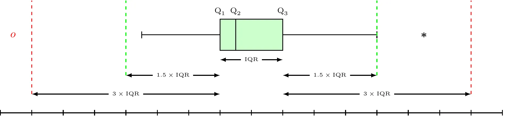

[1] 10552 Data Summary and Presentation
Major Themes of Stat-4110
- Basic Data Analysis: A discussion on gathering, displaying, and summarizing data
- Probability: A study of the laws of chance
- Statistical Inference: The science of drawing statistical conclusions from specific data using a knowledge of probability.
Learning Objectives
After careful study of this chapter, you should be able to do the following:
- Compute and interpret the sample mean, sample variance, sample standard deviation, sample median, and sample range.
- Explain the concepts of sample mean, sample variance, population mean, and population variance.
- Construct and interpret visual data displays, including the stem-and-leaf display, the histogram, and the box plot and understand how these graphical techniques are useful in uncovering and summarizing patterns in data.
- Explain how to use box plots and other data displays to visually compare two or more samples of data.
- Know how to use simple time series plots to visually display the important features of time-oriented data.
- Construct scatter plots and compute and interpret a sample correlation coefficient.
2.1 Data Summary and Display
2.1.1 Mean
2.1.1.1 Sample Mean
Sample Mean
If the n observations in a sample are denoted by X_{1},X_{2},\ldots,X_{n}, the sample mean is \begin{aligned} \overline{X} & = \frac{X_{1} + X_{2} + \cdots + X_{n}}{n} \\ \overline{X} & = \frac{\sum_{i=1}^{n} X_{i}}{n} \end{aligned}
2.1.1.2 Population Mean
Population Mean
When there is a finite number of observations (say, N) in the population, the population mean is \begin{aligned} \mu & = \frac{\sum_{i=1}^{N} X_{i}}{N} \end{aligned}
The sample mean, \overline{X}, is a reasonable estimate of the population mean, \mu.
2.1.1.3 Example
Example
Consider the O-ring tensile strength experiment described in Chapter 1. The data from the modified rubber compound (1048, 1059, 1047, 1066, 1040, 1070, 1037, 1073) are shown in the dot diagram (Figure 2.1 and Figure 2.2). The sample mean strength (psi) for the eight observations on strength is \begin{aligned} \overline{X} & = \frac{\sum_{i=1}^{n} X_{i}}{n} \\ \overline{X} & = \frac{1037 + 1047 + \cdots + 1040}{8} \\ \overline{X} & = \frac{8440}{8} = 1055 \text{ psi} \end{aligned}
A physical interpretation of the sample mean as a measure of location is shown in Figure 2.1 and Figure 2.2. Note that the sample mean \overline{X} = 1055 can be thought of as a “balance point.” That is, if each observation represents 1 pound of mass placed at the point on the x-axis, a fulcrum located at \overline{X} would exactly balance this system of weights.

library(fastverse)
library(tidyverse)
library(scales)
library(janitor)
library(kableExtra)
Exmp2.2 <-
data.table(
TS = c(1048, 1059, 1047, 1066, 1040, 1070, 1037, 1073)
)
Exmp2.2 %>%
pull(TS) %>%
fmean(x = .)# Dot diagram of O-ring tensile strength. The sample mean is shown as a balance point for a system of weights.
ggplot(data = Exmp2.2, mapping = aes(x = TS)) +
geom_dotplot(binwidth = 1, stackdir = "up", dotsize = 1) +
geom_vline(aes(xintercept = fmean(TS)), color = "red", linetype = "dashed", linewidth = 1) +
scale_x_continuous(breaks = pretty_breaks(n = 8)) +
labs(
x = "Tensile Strength"
, y = NULL
) +
theme_classic() +
theme(
axis.ticks.y = element_blank()
, axis.text.y = element_blank()
)2.1.2 Variance and Standard Deviation
2.1.2.1 Sample Variance and Sample Standard Deviation
Sample Variance and Sample Standard Deviation
If the n observations in a sample are denoted by X_{1},X_{2},\ldots,X_{n}, then the sample variance is
\begin{aligned} S^2 & = \frac{\sum_{i=1}^{n}\left(X_{i}-\overline{X}\right)^{2}}{n-1} \end{aligned}
The sample standard deviation, S, is the positive square root of the sample variance.
The units of measurement for the sample variance are the square of the original units of the variable. Thus, if X is measured in psi, the units for the sample variance are (\text{psi})^2. The standard deviation has the desirable property of measuring variability in the original units of the variable of interest, X (psi).
2.1.2.2 Example
Example
Consider the O-ring tensile strength experiment described in Chapter 1. The data from the modified rubber compound (1048, 1059, 1047, 1066, 1040, 1070, 1037, 1073) are shown in the dot diagram (Figure 2.3). The numerator of S^2 is (See Table 2.1) \sum_{i=1}^{n}\left(X_{i}-\overline{X}\right)^{2} = 1348
so the sample variance is
\begin{aligned} S^2 & = \frac{\sum_{i=1}^{n}\left(X_{i}-\overline{X}\right)^{2}}{n-1} = \frac{1348}{8-1} = 192.57 \text{ psi}^2 \end{aligned}
and the sample standard deviation is
\begin{aligned} S & = \sqrt{192.57} = 13.9 \text{ psi} \end{aligned}
| i | X_i | X_{i}-\overline{X} | \left(X_{i}-\overline{X}\right)^{2} |
|---|---|---|---|
| 1 | 1,048 | -7 | 49 |
| 2 | 1,059 | 4 | 16 |
| 3 | 1,047 | -8 | 64 |
| 4 | 1,066 | 11 | 121 |
| 5 | 1,040 | -15 | 225 |
| 6 | 1,070 | 15 | 225 |
| 7 | 1,037 | -18 | 324 |
| 8 | 1,073 | 18 | 324 |
| Total | 8,440 | 0 | 1,348 |
Also note that \sum_{i=1}^{n}\left(X_{i}-\overline{X}\right)^{2}=\sum_{i=1}^{n}X_{i}^{2}-\frac{\left(\sum_{i=1}^{n}X_{i}\right)^{2}}{n}.
[1] 192.5714[1] 13.87701Exmp2.2 %>%
pull(TS) %>%
fvar(x = .)
Exmp2.2 %>%
pull(TS) %>%
fsd(x = .)| TS | Dev | Dev2 |
|---|---|---|
| 1048 | -7 | 49 |
| 1059 | 4 | 16 |
| 1047 | -8 | 64 |
| 1066 | 11 | 121 |
| 1040 | -15 | 225 |
| 1070 | 15 | 225 |
| 1037 | -18 | 324 |
| 1073 | 18 | 324 |
| Total | 0 | 1348 |
Exmp2.2 %>%
fmutate(
Dev = TS - fmean(TS)
, Dev2 = (TS - fmean(TS))^2
) %>%
adorn_totals() %>%
kbl()2.1.2.3 How Does the Sample Variance Measure Variability?
How Does the Sample Variance Measure Variability?
To see how the sample variance measures dispersion or variability, refer to Figure 2.3, which shows the deviations X_{i}-\overline{X} for the O-ring tensile strength data. The greater the amount of variability in the O-ring tensile strength data, the larger in absolute magnitude some of the deviations X_{i}-\overline{X} will be. Because the deviations X_{i}-\overline{X} always sum to zero, we must use a measure of variability that changes the negative deviations to nonnegative quantities. Squaring the deviations is the approach used in the sample variance. Consequently, if S^2 is small, there is relatively little variability in the data, but if S^2 is large, the variability is relatively large.

2.1.2.4 Population Variance
Population Variance
When the population is finite and consists of N values, we may define the population variance as
\begin{aligned} \sigma^2 & = \frac{\sum_{i=1}^{N}\left(X_{i}-\mu\right)^{2}}{N} \end{aligned}
The sample variance, S^2, is a reasonable estimate of the population variance, \sigma^2.
2.2 Stem-and-Leaf Diagram
Stem-and-Leaf Diagram
A stem-and-leaf diagram is a good way to obtain an informative visual display of a data set X_{1},X_{2},\ldots,X_{n}, where each number X_{i} consists of at least two digits. To construct a stem-and-leaf diagram, use the following steps:
Steps for Constructing a Stem-and-Leaf Diagram
- Divide each number X_{i} into two parts: a stem, consisting of one or more of the leading digits, and a leaf, consisting of the remaining digit.
- List the stem values in a vertical column.
- Record the leaf for each observation beside its stem.
- Write the units for stems and leaves on the display.
2.2.1 Example
Example
To illustrate the construction of a stem-and-leaf diagram, consider the alloy compressive strength data in Table 2.4.
| 105 | 221 | 183 | 186 | 121 | 181 | 180 | 143 |
| 97 | 154 | 153 | 174 | 120 | 168 | 167 | 141 |
| 245 | 228 | 174 | 199 | 181 | 158 | 176 | 110 |
| 163 | 131 | 154 | 115 | 160 | 208 | 158 | 133 |
| 207 | 180 | 190 | 193 | 194 | 133 | 156 | 123 |
| 134 | 178 | 76 | 167 | 184 | 135 | 229 | 146 |
| 218 | 157 | 101 | 171 | 165 | 172 | 158 | 169 |
| 199 | 151 | 142 | 163 | 145 | 171 | 148 | 158 |
| 160 | 175 | 149 | 87 | 160 | 237 | 150 | 135 |
| 196 | 201 | 200 | 176 | 150 | 170 | 118 | 149 |
We will select as stem values the numbers 7, 8, 9, \ldots, 24. The resulting stem-and-leaf diagram is presented in the following figure.
The decimal point is 1 digit(s) to the right of the |
7 | 6
8 | 7
9 | 7
10 | 15
11 | 058
12 | 013
13 | 133455
14 | 12356899
15 | 001344678888
16 | 0003357789
17 | 0112445668
18 | 0011346
19 | 034699
20 | 0178
21 | 8
22 | 189
23 | 7
24 | 5Exmp2.4 <- fread("./data/Exmp2.4.csv")
Exmp2.4 %>%
pull(CS) %>%
stem(x = ., scale = 2, width = 80)Practical interpretation: Inspection of this display immediately reveals that most of the compressive strengths lie between 110 and 200 psi and that a central value is somewhere between 150 and 160 psi. Furthermore, the strengths are distributed approximately symmetrically about the central value. The stem-and-leaf diagram enables us to determine quickly some important features of the data that were not immediately obvious in the original display in the table.
Min. 1st Qu. Median Mean 3rd Qu. Max.
76.0 144.5 161.5 162.7 181.0 245.0 Exmp2.4 %>%
pull(CS) %>%
summary()2.3 Histograms
2.3.1 Histogram
Histogram
A histogram is a graphical representation of the distribution of a dataset, used to summarize and visualize the frequency or relative frequency of data within specified intervals, called bins. Each bin represents a range of values, and the height of the bar corresponding to a bin reflects the number of data points (or proportion of data points) that fall within that range. Histograms are particularly useful for understanding the shape, central tendency, spread, and outliers in a dataset, especially for continuous or large datasets.
2.3.2 Example
Gold Ball Distance
The United States Golf Association tests golf balls to ensure that they conform to the rules of golf. Balls are tested for weight, diameter, roundness, and conformance to an overall distance standard. The overall distance test is conducted by hitting balls with a driver swung by a mechanical device nicknamed Iron Byron, after the legendary great player Byron Nelson, whose swing the machine is said to emulate.
| 291.5 | 274.4 | 290.2 | 276.4 | 272.0 | 268.7 | 281.6 | 281.6 | 276.3 | 285.9 |
| 269.6 | 266.6 | 283.6 | 269.6 | 277.8 | 287.8 | 267.6 | 292.6 | 273.4 | 284.4 |
| 270.7 | 274.0 | 285.2 | 275.5 | 272.1 | 261.3 | 274.0 | 279.3 | 281.0 | 293.1 |
| 277.5 | 278.0 | 272.5 | 271.7 | 280.8 | 265.6 | 260.1 | 272.5 | 281.3 | 263.0 |
| 279.0 | 267.3 | 283.5 | 271.2 | 268.5 | 277.1 | 266.2 | 266.4 | 271.5 | 280.3 |
| 267.8 | 272.1 | 269.7 | 278.5 | 277.3 | 280.5 | 270.8 | 267.7 | 255.1 | 276.4 |
| 283.7 | 281.7 | 282.2 | 274.1 | 264.5 | 281.0 | 273.2 | 274.4 | 281.6 | 273.7 |
| 271.0 | 271.5 | 289.7 | 271.1 | 256.9 | 274.5 | 286.2 | 273.9 | 268.5 | 262.6 |
| 261.9 | 258.9 | 293.2 | 267.1 | 255.0 | 269.7 | 281.9 | 269.6 | 279.8 | 269.9 |
| 282.6 | 270.0 | 265.2 | 277.7 | 275.5 | 272.2 | 270.0 | 271.0 | 284.3 | 268.4 |
Table 2.7 gives the distances achieved (in yards) by hitting 100 golf balls of a particular brand in the overall distance test. Because the data set contains 100 observations and \sqrt{100} = 10, we suspect that about 10 bins will provide a satisfactory histogram. The histogram for the golf ball distance data is shown in Figure 2.4 (a). Notice that the midpoint of the first bin is 250 yards and that the histogram only has 9 bins that contain a nonzero frequency. A histogram, like a stem-and-leaf plot, gives a visual impression of the shape of the distribution of the measurements, as well as information about the inherent variability in the data. Note the reasonably symmetric or bell-shaped distribution of the golf ball distance data.

Exmp2.6 <- fread("./data/Exmp2.6.csv")
# Histogram with 10 bins for the golf ball distance data
ggplot(data = Exmp2.6, mapping = aes(x = Distance)) +
geom_histogram(bins = 9) +
scale_x_continuous(breaks = pretty_breaks(n = 8)) +
scale_y_continuous(expand = c(0, 0), limits = c(0, NA), breaks = pretty_breaks(n = 8)) +
labs(
x = "Distance"
, y = "Frequency"
) +
theme_classic()
# Histogram with 16 bins for the golf ball distance data
ggplot(data = Exmp2.6, mapping = aes(x = Distance)) +
geom_histogram(bins = 16) +
scale_x_continuous(breaks = pretty_breaks(n = 8)) +
scale_y_continuous(expand = c(0, 0), limits = c(0, NA), breaks = pretty_breaks(n = 8)) +
labs(
x = "Distance"
, y = "Frequency"
) +
theme_classic()
# A cumulative frequency plot of the golf ball distance data
ggplot(data = Exmp2.6, mapping = aes(x = Distance)) +
geom_histogram(mapping = aes(y = after_stat(count / sum(count))), bins = 9) +
scale_x_continuous(breaks = pretty_breaks(n = 8)) +
scale_y_continuous(expand = c(0, 0), limits = c(0, NA), breaks = pretty_breaks(n = 8)) +
labs(
x = "Distance"
, y = "Frequency"
) +
theme_classic()
# A relative frequency plot of the golf ball distance data
ggplot(data = Exmp2.6, mapping = aes(x = Distance)) +
geom_histogram(mapping = aes(y = after_stat(cumsum(count))), bins = 10) +
scale_x_continuous(breaks = pretty_breaks(n = 8)) +
scale_y_continuous(expand = c(0, 0), limits = c(0, NA), breaks = pretty_breaks(n = 8)) +
labs(
x = "Distance"
, y = "Frequency"
) +
theme_classic()2.3.3 Pareto Chart
Pareto Chart
An important variation of the histogram is the Pareto chart. This chart is widely used in quality and process improvement studies where the data usually represent different types of defects, failure modes, or other categories of interest to the analyst. The categories are ordered so that the category with the largest number of frequencies is on the left, followed by the category with the second largest number of frequencies, and so forth.
2.3.4 Example
Example
Table 2.8 presents data on aircraft accident rates taken from an article in The Wall Street Journal (“Jet’s Troubled History Raises Issues for the FAA and the Manufacturer,” 19 September 2000). The table presents the total number of accidents involving hull losses between 1959 and 1999 for 22 types of aircraft and the hull loss rate expressed as the number of hull losses per million departures. Figure 2-11 shows a Pareto chart of the hull losses per million departures. Clearly, the first three aircraft types account for a large percentage of the incidents on a per-million-departures basis. An interesting fact about the first three aircraft types is that the 707/720 and the DC-8 were mid-1950s’ designs and are not in regular
| Aircraft Type | Actual Number of Hull Losses | Hull Losses/Million Departures |
|---|---|---|
| MD-11 | 5 | 6.54 |
| 707/720 | 115 | 6.46 |
| DC-8 | 71 | 5.84 |
| F-28 | 32 | 3.94 |
| BAC 1-11 | 22 | 2.64 |
| DC-10 | 20 | 2.57 |
| 747-Early | 21 | 1.9 |
| A310 | 4 | 1.4 |
| A300-600 | 3 | 1.34 |
| DC-9 | 75 | 1.29 |
| A300-Early | 7 | 1.29 |
| 737-1 & 2 | 62 | 1.23 |
| 727 | 70 | 0.97 |
| A310/319/321 | 7 | 0.96 |
| F100 | 3 | 0.8 |
| L-1011 | 4 | 0.77 |
| Bae 146 | 3 | 0.59 |
| 747-400 | 1 | 0.49 |
| 757 | 4 | 0.46 |
| MD-80/90 | 10 | 0.43 |
| 767 | 3 | 0.41 |
| 737-3,4 & 5 | 12 | 0.39 |
passenger service today in most of the world, whereas the MD-11 was introduced into passenger service in 1990. Between 1990 and 1999, five of the global fleet of 198 MD-11s were destroyed in crashes, leading to the high accident rate (an excellent discussion of potential root causes of these accidents is in The Wall Street Journal article). The purpose of most Pareto charts is to help the analyst separate the sources of defects or incidents into the vital few and the relatively “insignificant many.” There are many varia- tions of the Pareto chart; for some examples, see Montgomery (2009a).
Exmp2.8 <- fread("./data/Exmp2.8.csv")
ggplot(data = Exmp2.8, mapping = aes(x = fct_reorder(Type, desc(HLMD)), y = HLMD)) +
geom_col() +
scale_y_continuous(expand = c(0, 0), limits = c(0, NA), breaks = pretty_breaks(n = 8)) +
scale_x_discrete(guide = guide_axis(n.dodge = 2)) +
labs(
x = "Aircraft type"
, y = "Hull losses/million departures"
) +
theme_classic()2.4 Box Plot
Box Plot
Box plot or Box Whisker plot can be used to pick out pertinent aspects of data such as
- Measure of Central Tendency
- Measure of Variability
- Measure of Symmetry
- Outliers
- Group Comparisons
 Box Whisker Plot
\begin{align*} \text{Lower Inner Fence} & =Q_{1}-1.5\times\text{IQR}\\ \text{Upper Inner Fence} & =Q_{3}+1.5\times\text{IQR}\\ \text{Lower Outer Fence} & =Q_{1}-3\times\text{IQR}\\ \text{Upper Outer Fence} & =Q_{3}+3\times\text{IQR} \end{align*}
- Mild Outlier: Beyond inner fence (but inside outer fence)
- Extreme Outlier: Beyond outer fence
- Note that the lines from the boxes extend to the lower and upper adjacent values (the smallest and largest values that are not outliers).

Exmp2.4 <- fread("./data/Exmp2.4.csv")
ggplot(data = Exmp2.4, mapping = aes(x = CS)) +
geom_boxplot(width = 0.3) +
scale_x_continuous(breaks = pretty_breaks(n = 8)) +
scale_y_continuous(limits = c(-1, 1)) +
labs(
x = "Strength"
, y = NULL
) +
theme_classic() +
theme(
axis.ticks.y = element_blank()
, axis.text.y = element_blank()
)2.5 Time Series Plots
Time Series Plots
- A time series or time sequence is a data set in which the observations are recorded in the order in which they occur.
- A time series plot is a graph in which the vertical axis denotes the observed value of the variable (say x) and the horizontal axis denotes the time (which could be minutes, days, years, etc.).
- When measurements are plotted as a time series, we often see
- trends,
- cycles, or
- other broad features of the data


2.6 Multivariate Data
Multivariate Data
- The dot diagram, stem-and-leaf diagram, histogram, and box plot are descriptive displays for univariate data; that is, they convey descriptive information about a single variable.
- Many engineering problems involve collecting and analyzing multivariate data, or data on several different variables.
- In engineering studies involving multivariate data, often the objective is to determine the relationships among the variables or to build an empirical model.
2.6.1 Example
Wire Bond Data
| Obs No | Pull Strength (Y) | Wire Length (X1) | Die Height (X2) |
|---|---|---|---|
| 1 | 9.95 | 2 | 50 |
| 2 | 24.45 | 8 | 110 |
| 3 | 31.75 | 11 | 120 |
| 4 | 35.00 | 10 | 550 |
| 5 | 25.02 | 8 | 295 |
| 6 | 16.86 | 4 | 200 |
| 7 | 14.38 | 2 | 375 |
| 8 | 9.60 | 2 | 52 |
| 9 | 24.35 | 9 | 100 |
| 10 | 27.50 | 8 | 300 |
| 11 | 17.08 | 4 | 412 |
| 12 | 37.00 | 11 | 400 |
| 13 | 41.95 | 12 | 500 |
| 14 | 11.66 | 2 | 360 |
| 15 | 21.65 | 4 | 205 |
| 16 | 17.89 | 4 | 400 |
| 17 | 69.00 | 20 | 600 |
| 18 | 10.30 | 1 | 585 |
| 19 | 34.93 | 10 | 540 |
| 20 | 46.59 | 15 | 250 |
| 21 | 44.88 | 15 | 290 |
| 22 | 54.12 | 16 | 510 |
| 23 | 56.63 | 17 | 590 |
| 24 | 22.13 | 6 | 100 |
| 25 | 21.15 | 5 | 400 |
Table2.9 <- fread("./data/Table2.9.csv")
ggplot(data = Table2.9, mapping = aes(x = X1, y = Y)) +
geom_point() +
labs(
x = "Length"
, y = "Strength"
) +
theme_classic()
ggplot(data = Table2.9, mapping = aes(x = X2, y = Y)) +
geom_point() +
labs(
x = "Die height"
, y = "Strength"
) +
theme_classic()
library(car)
scatterplot(
formula = Y ~ X1
, data = Table2.9
, smooth = FALSE
, regLine = FALSE
, xlab = "Length"
, ylab = "Strength"
)
scatterplot(
formula = Y ~ X2
, data = Table2.9
, smooth = FALSE
, regLine = FALSE
, xlab = "Die height"
, ylab = "Strength"
)2.6.2 Sample Correlation Coefficient
Sample Correlation Coefficient
Given n pairs of data \left(X_{1},Y_{1}\right),\left(X_{2},Y_{2}\right),\ldots,\left(X_{n},Y_{n}\right), the sample correlation coefficient r is defined by
r=\frac{\sum_{i=1}^{n}\left(X_{i}-\overline{X}\right)\left(Y_{i}-\overline{Y}\right)}{\sqrt{\sum_{i=1}^{n}\left(X_{i}-\overline{X}\right)^{2}\sum_{i=1}^{n}\left(Y_{i}-\overline{Y}\right)^{2}}}
where -1\leq r\leq+1.


{kind=link}
{kind=link}
{kind=link}
{kind=link}
{kind=link}
{kind=link}
{kind=link}
{kind=link}
{kind=link}
{kind=link}
{kind=link}
{kind=link}
{kind=link}
{kind=link}
2.6.3 Example
Data on Shampoo
| Foam | Scent | Color | Residue | Region | Quality |
|---|---|---|---|---|---|
| 6.3 | 5.3 | 4.8 | 3.1 | 1 | 91 |
| 4.4 | 4.9 | 3.5 | 3.9 | 1 | 87 |
| 3.9 | 5.3 | 4.8 | 4.7 | 1 | 82 |
| 5.1 | 4.2 | 3.1 | 3.6 | 1 | 83 |
| 5.6 | 5.1 | 5.5 | 5.1 | 1 | 83 |
| 4.6 | 4.7 | 5.1 | 4.1 | 1 | 84 |
| 4.8 | 4.8 | 4.8 | 3.3 | 1 | 90 |
| 6.5 | 4.5 | 4.3 | 5.2 | 1 | 84 |
| 8.7 | 4.3 | 3.9 | 2.9 | 1 | 97 |
| 8.3 | 3.9 | 4.7 | 3.9 | 1 | 93 |
| 5.1 | 4.3 | 4.5 | 3.6 | 1 | 82 |
| 3.3 | 5.4 | 4.3 | 3.6 | 1 | 84 |
| 5.9 | 5.7 | 7.2 | 4.1 | 2 | 87 |
| 7.7 | 6.6 | 6.7 | 5.6 | 2 | 80 |
| 7.1 | 4.4 | 5.8 | 4.1 | 2 | 84 |
| 5.5 | 5.6 | 5.6 | 4.4 | 2 | 84 |
| 6.3 | 5.4 | 4.8 | 4.6 | 2 | 82 |
| 4.3 | 5.5 | 5.5 | 4.1 | 2 | 79 |
| 4.6 | 4.1 | 4.3 | 3.1 | 2 | 81 |
| 3.4 | 5.0 | 3.4 | 3.4 | 2 | 83 |
| 6.4 | 5.4 | 6.6 | 4.8 | 2 | 81 |
| 5.5 | 5.3 | 5.3 | 3.8 | 2 | 84 |
| 4.7 | 4.1 | 5.0 | 3.7 | 2 | 83 |
| 4.1 | 4.0 | 4.1 | 4.0 | 2 | 80 |
| Foam | Scent | Color | Residue | Region | Quality | |
|---|---|---|---|---|---|---|
| Foam | 1.0000000 | 0.0021934 | 0.3284925 | 0.1931525 | -0.0323318 | 0.5122369 |
| Scent | 0.0021934 | 1.0000000 | 0.5987719 | 0.4995952 | 0.2782582 | -0.2516592 |
| Color | 0.3284925 | 0.5987719 | 1.0000000 | 0.5241356 | 0.4577615 | -0.1938511 |
| Residue | 0.1931525 | 0.4995952 | 0.5241356 | 1.0000000 | 0.1647598 | -0.4892339 |
| Region | -0.0323318 | 0.2782582 | 0.4577615 | 0.1647598 | 1.0000000 | -0.5071783 |
| Quality | 0.5122369 | -0.2516592 | -0.1938511 | -0.4892339 | -0.5071783 | 1.0000000 |
Table2.11 <- fread("./data/Table2.11.csv")
Table2.11 %>%
cor() %>%
kbl(){kind=link}